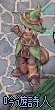
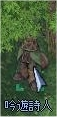
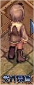
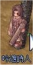
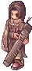
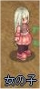
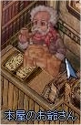

画像にリンクがはってあるものは、クリックすると別窓で大きめサイズが表示されます。
[イレンド]
所在地；ゲフェン5時方向（131.38） |
 |
[グィンダブルハーモニー]
所在地；フェイヨン中央付近（181.171） |
|  |
[メルリン・ヒューチャー]
所在地；6.ジュノー広場西学会建物（95.182）内 |
  |
[キノキティ]
所在地；モロク南カプラ西側（133.111） |
|  |
[ヨルティ]
所在地；モロク南カプラ西側（133.111）付近 |
  |
[スケジ・ポンディン]
所在地；ジュノー4時方向本屋（264.90）内 |
  |
back
(c) Gravity Co., Ltd. & Lee MyoungJin(studio DTDS). All rights reserved.
(c) GungHo Online Entertainment, Inc. All Rights Reserved.
当コンテンツの再利用（再転載・配布など）は、禁止しています。